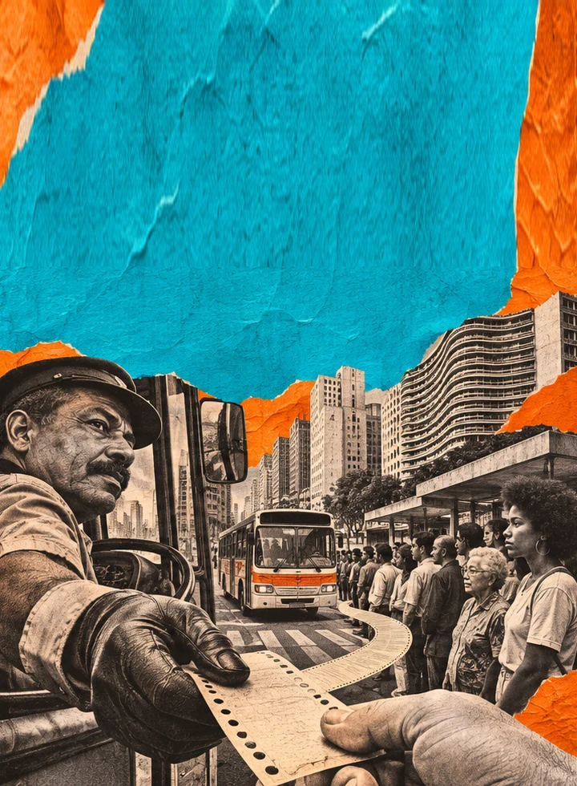

Quando a passagem zera, alguém paga a conta: pela Lei de Mobilidade Urbana, o dinheiro pode vir do orçamento público e de outras fontes. As estimativas medem coisas diferentes. A UnB, em estudo financiado pela Frente Parlamentar em Defesa da Tarifa Zero, calculou que R$ 45,6 bilhões por ano deixariam de sair do bolso dos passageiros nas capitais e regiões metropolitanas, valor que não é o custo para os governos. A NTU, associação das empresas de ônibus, estima em R$ 90,8 bilhões por ano o custo de bancar todos os ônibus do país sem tarifa. Os resultados lá fora variam: em Tallinn, pesquisadores estimaram 14% mais uso do transporte, mas boa parte dos novos passageiros antes ia a pé; em Dunkerque, com a rede redesenhada, o uso subiu 65% nos dias úteis.
Ou vá direto na dúvida
6 paradasPARADA 1Ônibus de graça tira carro da rua?
Nem sempre. Em Tallinn, na Estônia, a gratuidade para moradores registrados começou em 2013. Cats, Susilo e Reimal estimaram aumento de 14% no uso do transporte público, mas a fatia de viagens a pé caiu 40%; a parcela de pessoas que usavam carro caiu 5%, e os quilômetros rodados de carro subiram 31%, porque as viagens ficaram mais longas.
PARADA 2Como funciona o Domingão Tarifa Zero?
Desde dezembro de 2023, os ônibus municipais de São Paulo são gratuitos aos domingos, no Natal, no Ano-Novo e no aniversário da cidade. Até 2 de agosto de 2026, a prefeitura contou 400 milhões de passageiros transportados, somando cada embarque. Naquele domingo, segundo a prefeitura, foram 2,83 milhões de passageiros, 17% a mais que no primeiro domingo de agosto de 2023, antes da gratuidade. É a comparação de um único dia.
PARADA 3Como é a tarifa zero em Maricá?
Maricá, no Rio de Janeiro, tem tarifa zero desde 2014. Em janeiro de 2026, a prefeitura incorporou vans municipais com trajetos curtos para áreas onde os ônibus têm dificuldade de chegar. Segundo a empresa municipal de transportes, a cidade aplicou na tarifa zero 1,95% do seu orçamento em 2024.
PARADA 4Onde mais a tarifa zero foi testada?
Luxemburgo tornou todo o transporte público gratuito em 2020; no censo de 2021, 69,3% dos trabalhadores iam de carro (eram 72,3% em 2011), e o transporte público ficou estável em 17,6%. Kansas City, nos EUA, zerou a tarifa em 2020 e voltou a cobrar US$ 2 em 1º de junho de 2026, quando acabaram as verbas emergenciais da pandemia que ajudavam a bancar o programa; idosos, jovens e pessoas de baixa renda cadastradas seguem com passe gratuito. Em Dunkerque, na França, a gratuidade veio em 2018 com uma rede redesenhada, e oito meses depois o uso tinha subido 65% nos dias úteis e 125% nos fins de semana.
PARADA 5Se a passagem é zero, quem paga o ônibus?
A Lei de Mobilidade Urbana separa o preço pago na catraca do valor que a empresa recebe; a diferença é o subsídio, que pode vir do orçamento público e de outras fontes. Em São Paulo, em 2024, o sistema de ônibus recebeu R$ 4,6 bilhões de tarifas e outras receitas e R$ 6,7 bilhões da prefeitura em compensações. Os valores cobrem o ano inteiro, inclusive os dias com cobrança. O Marco Legal do Transporte Público Coletivo, de 2026, abre novas fontes de custeio a partir de junho de 2027.
PARADA 6Quanto custaria tarifa zero no Brasil inteiro?
As estimativas variam com o recorte. A UnB calculou R$ 45,6 bilhões por ano em passagens que deixariam de ser pagas nas capitais e regiões metropolitanas, valor que não é o custo total para os governos. A NTU, associação das empresas de ônibus, estima R$ 90,8 bilhões por ano para todos os ônibus do país, já contando 20% mais passageiros; um estudo da UFMG, da UnB e da Fundação Rosa Luxemburgo chega a R$ 80 bilhões para as cidades com 50 mil habitantes ou mais.
Os dois lados, com o mesmo espaço
Há também propostas intermediárias. O economista Marcelo Miterhof (2026), em artigo de opinião, defende tarifa baixa com mais investimento, mas não descarta a gratuidade: propõe ampliar os subsídios e testá-la aos poucos. A simulação do curso usa valores fictícios.
Para ir além
uma defesa e um manual de custos- Tarifa zero: a cidade sem catracas, de Lucio Gregori e colegas (Autonomia Literária e Fundação Rosa Luxemburgo, 2020): apresenta a gratuidade pela perspectiva de quem formulou e defendeu a proposta em São Paulo
- Mobilidade Urbana e Tarifa Zero, de Antonio Clóvis Pinto Ferraz e colegas (RiMa, 2025, e-book gratuito): acompanha os cálculos para avaliar o custo de um sistema gratuito, com capítulos sobre impactos negativos
Fontes
19 fontes- Cats, Susilo e Reimal · Tallinn, Transportation (publicação online em 2016). Entrevistas e diários de viagem antes e quase um ano depois da mudança. O artigo mede uso do transporte, caminhada, uso do carro e quilômetros rodados. · abrir ↗
- Prefeitura de São Paulo · balanço do Domingão Tarifa Zero (agosto de 2026). O balanço informa as datas com gratuidade e o total acumulado de passageiros transportados no programa. · abrir ↗
- Prefeitura de Maricá · início das vans Tarifa Zero (janeiro de 2026). Descreve a integração de vans municipais à rede gratuita e a finalidade dos trajetos mais curtos. · abrir ↗
- Empresa Pública de Transportes de Maricá · renovação da frota (6 de novembro de 2026). Registra a chegada de 19 veículos e indica os distritos a que se destinam. · abrir ↗
- Câmara dos Deputados · Lei 12.587/2012, art. 9º. Distingue a tarifa pública da remuneração do serviço e enumera fontes de cobertura do subsídio. · abrir ↗
- SPTrans · Evolução dos custos e receitas (dezembro de 2025). Para o conjunto do sistema municipal em 2024, a apresentação discrimina receita tarifária e outras receitas, compensações tarifárias e custo. Os valores estão arredondados em bilhões de reais. · abrir ↗
- Caribé e outros (UnB/UFRJ) · A Tarifa Zero no transporte público como política de distribuição de renda (maio de 2026). Texto para discussão do projeto Tarifa zero e suas possibilidades de expansão no Brasil. Estima o gasto em passagens que seria liberado nas 27 capitais e em seus sistemas metropolitanos. O projeto é financiado pela Frente Parlamentar em Defesa da Tarifa Zero (gabinetes de deputados do PT e do PSOL) e tem apoio da Fundação Rosa Luxemburgo. · abrir ↗
- Marcelo Miterhof · Ônibus gratuito ou tarifa módica? Conjuntura Econômica/FGV (setembro de 2026). Economista do BNDES em exercício na Secretaria-Geral da Presidência. O artigo é opinião pessoal. Compara gratuidade e tarifa baixa, reúne estimativas de custo da NTU e do estudo da UFMG, UnB e Fundação Rosa Luxemburgo, e propõe ampliar os subsídios testando a tarifa zero aos poucos. · abrir ↗
- Lucio Gregori, Chico Whitaker, José Jairo Varoli, Mauro Zilbovicius e Márcia Sandoval Gregori · Tarifa zero: a cidade sem catracas (Autonomia Literária e Fundação Rosa Luxemburgo, 2020). Os autores reconstituem a proposta de gratuidade em São Paulo e defendem outra forma de financiar as viagens. · abrir ↗
- Antonio Clóvis Pinto Ferraz e colegas · Mobilidade Urbana e Tarifa Zero (RiMa, 2025). E-book gratuito da editora. Examina custos e a metodologia de cálculo, com capítulos sobre impactos negativos e sobre tarifa zero em dias especiais. · abrir ↗
- NTU · Tarifa Zero nas Cidades do Brasil 2026, via Correio da Manhã (junho de 2026). NTU é a associação das empresas de ônibus. O estudo conta 143 cidades com tarifa zero e 8 que voltaram a cobrar passagem. · abrir ↗
- Rodrigues, Da Mata e Possebom · Free Public Transport: More Jobs without Environmental Damage? (2024). Compara cidades brasileiras com e sem gratuidade: mais emprego, menos emissões, sem redução do uso de carros. Texto em inglês. · abrir ↗
- Agência Senado · Sancionado o marco do transporte público (junho de 2026). Lei 15.432/2026: novas fontes de custeio, remuneração das empresas separada das passagens, vetos e vigência em um ano. · abrir ↗
- STATEC · Censo de 2021 de Luxemburgo, deslocamento para o trabalho (2025). Meio de transporte usado pelos trabalhadores para ir ao trabalho, comparado com o censo de 2011. · abrir ↗
- Observatório Europeu de Mobilidade Urbana · Luxemburgo e o transporte gratuito (2022). Relata a gratuidade de todo o transporte público do país desde 2020. · abrir ↗
- Universidade do Kansas · estudo sobre os ônibus gratuitos de Kansas City. Pesquisa com mais de 500 passageiros sobre o efeito da gratuidade no uso do ônibus. · abrir ↗
- KCUR · Kansas City volta a cobrar passagem (junho de 2026). Fim da gratuidade em 1º de junho de 2026, após o fim das verbas emergenciais, com passe gratuito para grupos cadastrados. · abrir ↗
- Observatório Europeu de Mobilidade Urbana · Dunkerque, um ano depois (2019). Resultados da gratuidade adotada em setembro de 2018 junto com uma rede de ônibus redesenhada. · abrir ↗
- EPT Maricá · apresentação na Câmara dos Deputados (outubro de 2025). Audiência pública sobre gratuidade no transporte: histórico da tarifa zero de Maricá desde 2014 e percentual do orçamento municipal aplicado nela de 2021 a 2024. · abrir ↗